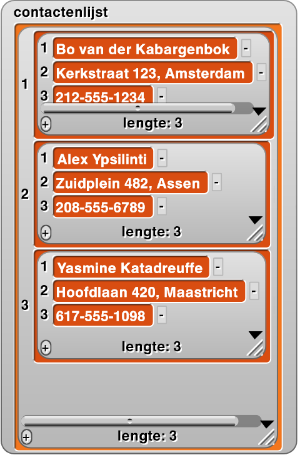

Dit zijn de minimale specificaties voor het
uitvoeren van Snap!
Terug naar de inhoudsopgave.
Hoofdstuk 3 Les 1: Contactenlijst

Hoofdstuk 3 Les 2: Boter, Kaas en Eieren
Hoofdstuk 3 Les 3: Robots en Kunstmatige Inteligentie

Hoofdstuk 3 Les 4: Data-Visualizatiemiddelen maken
Hoofdstuk 3 Les 5: Big Data